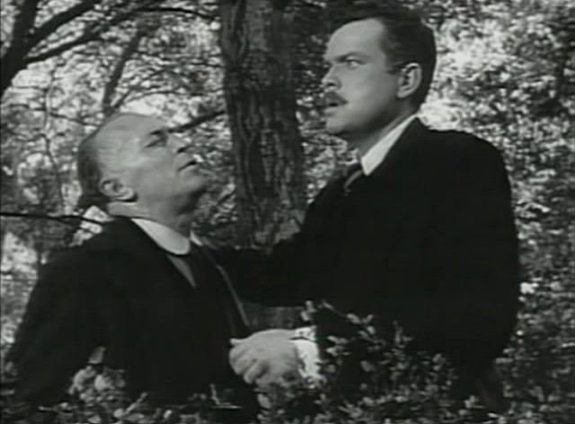

The Stranger, frame at 16:34
Orson Welles · 1946 · Film, black and white (frame)
Free to use
The scene in the woods between Kindler and Meinike runs four minutes without a cut, at a time when a one-minute take was rare. Orson Welles used long takes so that the editor Ernest J. Nims, who had been given power to cut the script, had nothing to cut away to. To get the job, Welles signed a guarantee to pay International Pictures his earnings above $50,000 a year if he broke his contract. He finished a day ahead of schedule and under budget.